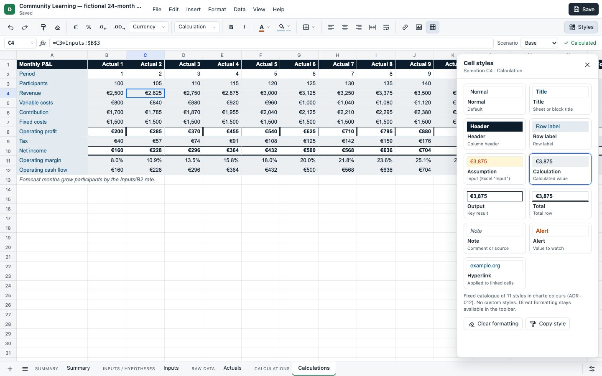
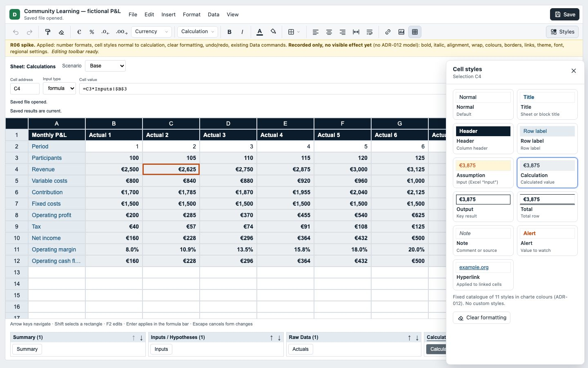
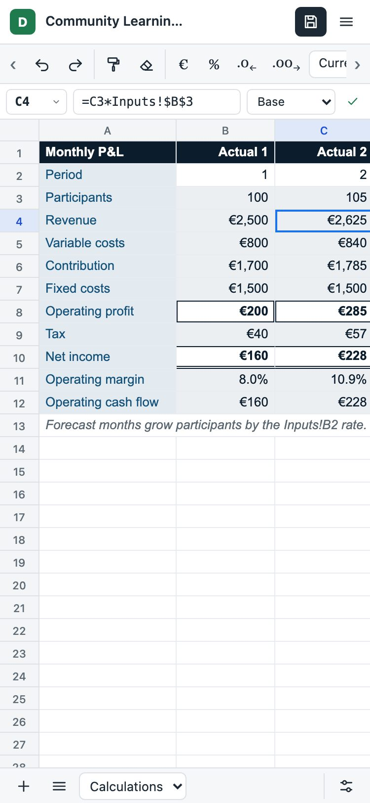
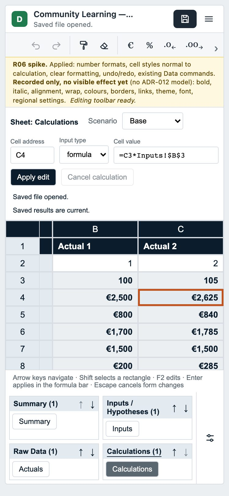
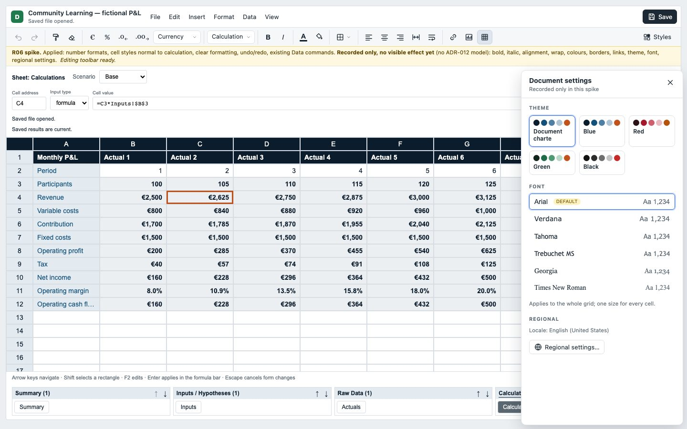
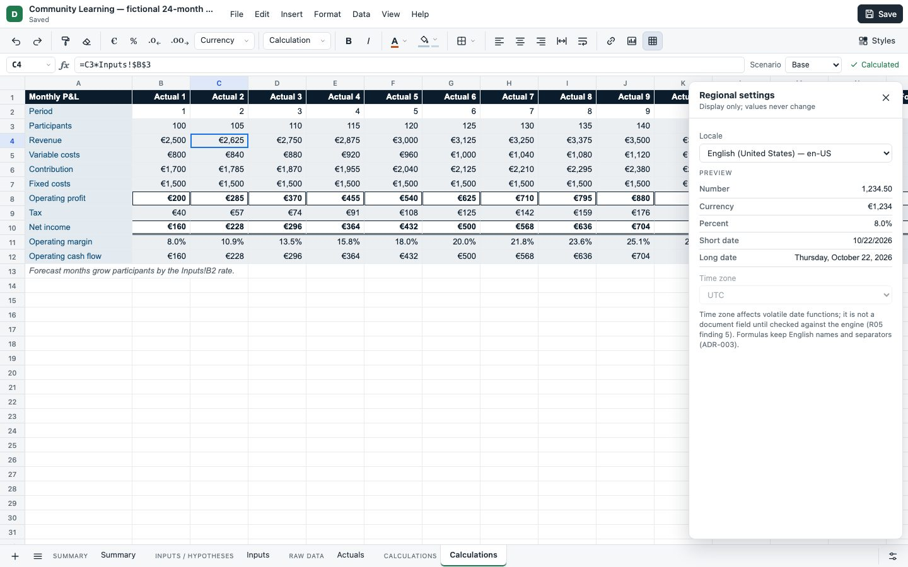
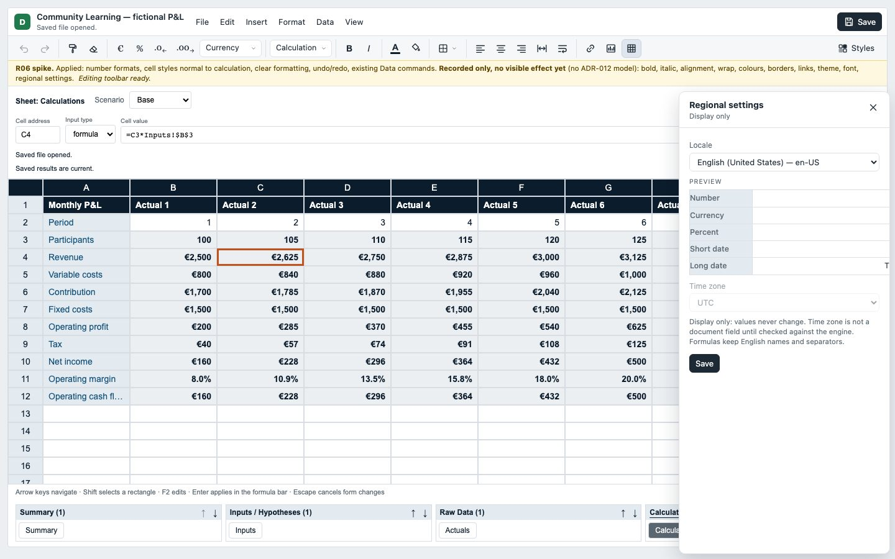
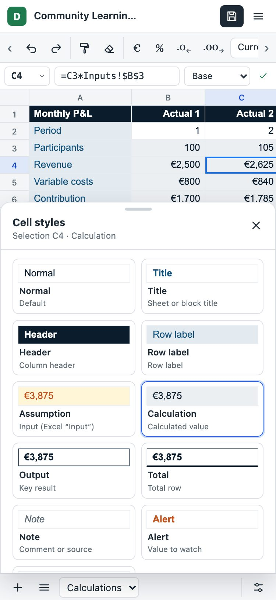
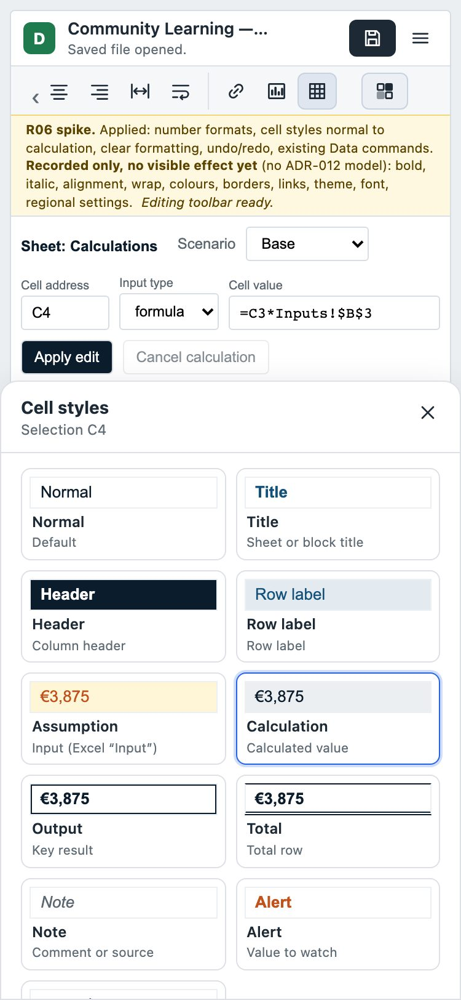

Data shell: variant A mock-up vs the R06 spike
Same states: Calculations sheet, cell C4 selected. The gap list is in docs/HTML-DATA-NATIVE-SHELL-SPIKE.md. Regenerate with node tools/shell-spike/compare.mjs.
| Viewport | Grid rows, mock-up | Grid rows, spike |
|---|---|---|
| 1440 × 900 | 32, no page scroll | 17, page scrolls |
| 375 × 812 | 28, no page scroll | 8, page scrolls |
1440 × 900 · cell styles panel


375 × 812 · no panel


1440 × 900 · document settings


1440 × 900 · regional settings


375 × 812 · cell styles as a bottom sheet

